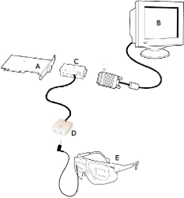
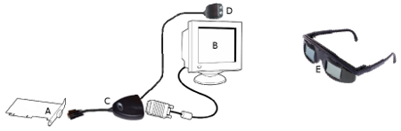
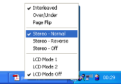

Connecting glasses
Connecting VRJoy glasses
- Turn off computer.
- Unplugg monitor B from graphic card A (symbols like at picture 1).
- Connect adapter C to graphic card A.
- Connect monitor B to adapter C.
- Connect adapter C to controller D.
- Connect shutter glasses E to controller D, one can user extension lead.
- Unplug keyboard from computer.
- Connect trailing socket (not shown on picture) to keyboard connector.
- Connect keyboard throw trailing socket.
- Connect trailing socket to controller D.
- Turn on computer.

Image 1. System schema with VRJoy shutter glasses
Connecting eDimensional glasses
- Turn off computer.
- Unplugg monitor B from graphic card A (symbols like at picture 2).
- Connect adapter C to graphic card A.
- Connect monitor B to adapter C.
- Connect infra-red transmitter D to adapter C.
- Turn on computer.
- When operating system is running, turn on shutter glasses using programming driver, as shown on picture 3.

Image 2. System schema with eDimensional shutter glasses

Image 3. Programming driver to controll eDimensional shutter glasses